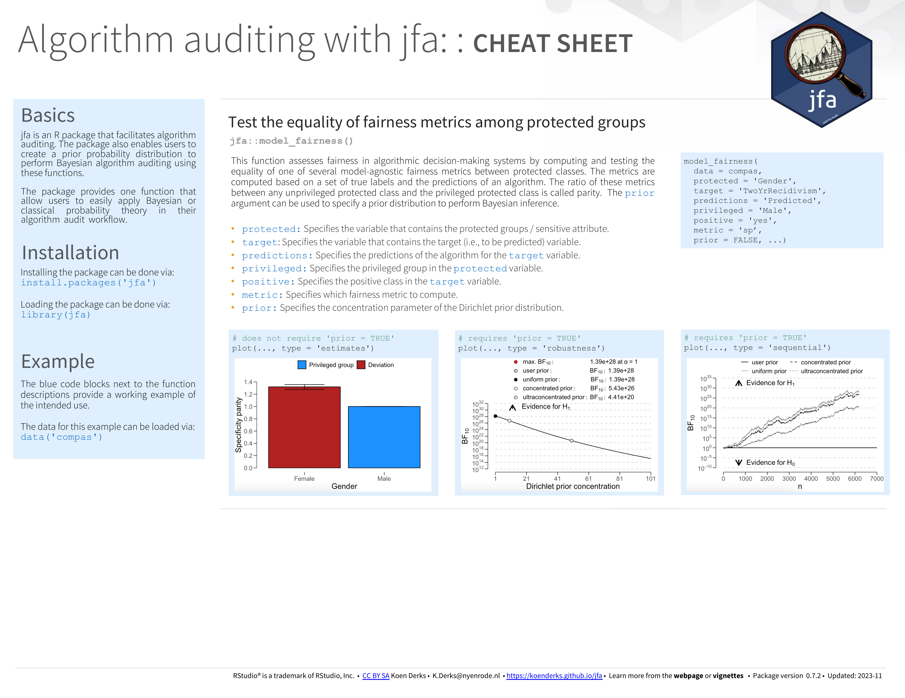

vignettes/articles/algorithm-auditing.Rmd
algorithm-auditing.RmdWelcome to the ‘Algorithm auditing’ vignette of the jfa package. This page provides a guide to the functions in the package that are designed to facilitate the audit of algorithms and predictive models. In particular, these functions implement techniques for calculating and testing fairness metrics. The package allows users to specify a prior probability distribution to conduct Bayesian algorithm auditing using these functions.
Below you can find an explanation of the available algorithm auditing functions in jfa.
The model_fairness() function is designed to evaluate
fairness in algorithmic decision-making systems. It does this by
computing and testing the equality of various model-agnostic fairness
metrics between protected classes, based on a set of true labels and the
predictions of an algorithm. The ratio of these metrics between an
unprivileged protected class and a privileged protected class is
referred to as parity, which quantifies relative fairness in the
algorithm’s predictions. Available parity metrics include predictive
rate parity, proportional parity, accuracy parity, false negative rate
parity, false positive rate parity, true positive rate parity, negative
predicted value parity, specificity parity, and demographic parity (Friedler et al., 2019; Pessach & Shmueli,
2022). The function returns an object that can be used with the
associated summary() and plot() methods.
For additional details about this function, please refer to the function documentation on the package website.
Example usage:
# Compare predictive rate parity
x <- model_fairness(
data = compas,
protected = "Ethnicity",
target = "TwoYrRecidivism",
predictions = "Predicted",
privileged = "Caucasian",
positive = "yes",
metric = "prp"
)
summary(x)##
## Classical Algorithmic Fairness Test Summary
##
## Options:
## Confidence level: 0.95
## Fairness metric: Predictive rate parity (Equalized odds)
## Model type: Binary classification
## Privileged group: Caucasian
## Positive class: yes
##
## Data:
## Sample size: 6172
## Unprivileged groups: 5
##
## Results:
## X-squared: 18.799
## Degrees of freedom: 5
## p-value: 0.0020951
##
## Comparisons to privileged (P) group:
## Precision Parity
## Caucasian (P) 0.57738 [0.53902, 0.61506] -
## African_American 0.66525 [0.6434, 0.68658] 1.1522 [1.1143, 1.1891]
## Asian 0.5 [0.067586, 0.93241] 0.86598 [0.11706, 1.6149]
## Hispanic 0.5906 [0.50715, 0.67038] 1.0229 [0.87836, 1.1611]
## Native_American 0.6 [0.14663, 0.94726] 1.0392 [0.25396, 1.6406]
## Other 0.61176 [0.49988, 0.71562] 1.0596 [0.86578, 1.2394]
## Odds ratio p-value
## Caucasian (P) - -
## African_American 1.4543 [1.2087, 1.7491] 5.4523e-05
## Asian 0.73231 [0.052801, 10.156] 1
## Hispanic 1.0559 [0.72564, 1.5432] 0.78393
## Native_American 1.0978 [0.1249, 13.228] 1
## Other 1.1532 [0.7105, 1.8933] 0.5621
##
## Model performance:
## Support Accuracy Precision Recall F1 score
## Caucasian 2103 0.6585830 0.5773810 0.4720195 0.5194110
## African_American 3175 0.6724409 0.6652475 0.7525587 0.7062147
## Asian 31 0.7419355 0.5000000 0.2500000 0.3333333
## Hispanic 509 0.6817289 0.5906040 0.4656085 0.5207101
## Native_American 11 0.6363636 0.6000000 0.6000000 0.6000000
## Other 343 0.6938776 0.6117647 0.4193548 0.4976077To ensure the accuracy of statistical results, jfa employs automated unit tests that regularly validate the output from the package against the following established benchmarks in the area of algorithm auditing:
The cheat sheet below will help you get started with jfa’s algorithm audit functionality. A pdf version can be downloaded here.
